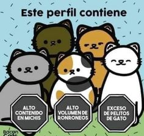
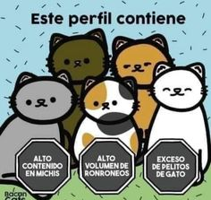

Datos curiosos
 


¿Cuántos de vosotros compartís vuestra vida con un gato? Los gatos son uno de los animales más populares en los hogares de todo el mundo y todos nos habremos dado cuenta de que son un poco distantes y tienen su propio espacio, a veces pasan de nosotros, son unos dormilones, les gusta las alturas... Pero hay muchas cosas que no conoces sobre ellos: Gaherproga Mascotas
1. Existen más de 500 millones de gatos domésticos en el mundo de 40 razas. 2. Los gatos hacen unos 100 sonidos y los perros solamente 10. 3. Son los animales con mayor oído. 4. Un gato que nace con un ojo azul normalmente es sordo de la oreja más cercana. 5. El gato más longevo vivió 34 años. 6. Pasan el 70% de su vida durmiendo. 7. La orina de tu gato brilla en la oscuridad cuando la iluminas con luz negra. Si crees que tu gato está marcando territorio -más allá del tremendo olor- puedes hacerle a la CSI y buscar la fluorescencia. 8. Los gatos se comunican con el movimiento de sus colas. Por ejemplo: si un gato está cerca de ti y agita su cola, es la mayor expresión de cariño que puede hacer. En cambio si la agita demasiado fuerte, tanto que golpea con ella, está de pésimo humor, es mejor que lo dejes solo un rato. 9. Pueden sentir el peligro... incluso durmiendo. 10. Pueden ver en la oscuridad, pero no pueden reconocer colores diferentes. 11. No les gustan los dulces. 12. En el Antiguo Egipto cuando un gato doméstico fallecía todos los miembros de la casa se depilaban las cejas y lamentaban su pérdida. 13. Normalmente tienen cinco dedos en cada pata delantera y cuatro en cada pata trasera. 14. Cuando los gatos están muy contentos cierran los ojos bien fuerte. 15. Los gatos, con el paso de los años, se vuelven intolerantes a la lactosa. 16. Isaac Newton, entre sus muchos logros, inventó las puertas abatibles para gatos. Así evitaba que sus mascotas le distrajeran. 17. En 1879 se usaron 37 gatos para entregar et correo a algunos pueblos. Sin embargo, se dieron cuenta de que no eran los suficientemente disciplinados para continuar la tarea y se abandonó el proyecto. 18. Un gato puede saltar hasta 5 veces su altura de una sola vez. 19. Los gatos sudan. Así es, pero no donde crees, en realidad el sudor aparece a través de las almohadillas de sus patas. 20. La mayoría de las hembras son diestras, mientras que los gatos machos suelen ser zurdos